この動画で伝える一文
同じように教わっているのに伸びる人と止まる人がいるのは能力の差だと思っている人に、差は主体的に動くか受動的に待つかであり、教えてもらうこと自体は悪くなく、教えてくれる人がいるからできている感謝は残したうえで、自分にどう活かすか、学ぶ、身につける、に寄せること、触れた情報は全部が使えるわけではなく自分で調理して使うかを自分で判断すること、初心者がまず教えてもらうのはよく、教えてもらえるレベルは低く基礎にしかならず、脱出できない限り何かの道のプロにはなれず、詰まったところを聞くのは一部分だけ手伝ってもらうことでその違いはかなり大きいこと、お金をもらう立場になれば誰も教えてくれず、学ぶだけではだめでアウトプットを出していかなければならず、教えられていないからではお金は取れず絶対に無理であること、完成している人はおらず学び続けていれば飯が食えて仕事ができること、主語を自分にすると絶対に伸び、歩みを止めたら終わりであり、学ぶ側に回って教えてもらうを卒業した人から景色は変わる、という本人の結論を残す。
01の「主体的か、受動的か。」と、08の「景色は、変わる。」で、同じ主張の背骨が通るようにします。02が言葉を学ぶと身につけるへ寄せることと、悪くないことと感謝を残すことを、03が主語の入れ替えを、04が自分で調理して判断することを、05が基礎までと一部分だけの手伝いを、06がお金をもらう側では誰も教えてくれないことを、07が完成していなくても飯が食えることを足します。
留保は02の「悪いわけでは、ない。」「感謝は、忘れない。」、04の「全部は、使えない。」、05の「まず教えてもらうのは、いい。」、06の「学ぶだけでは、だめ。」に置きます。03の「かなり、変わる。」と05の「違いは、かなり大きい。」は、程度を残した本人の言い方です。最後は本人の結論で閉じ、視聴者への問いかけや、両論を同じ比重にしたまとめにはしません。
視聴者
教わっているあいだは伸びているつもりで、プロとしては止まったままの人。見終わったあと、差は能力ではなく主体的に動くか受動的に待つかだと分かり、主語を自分にして学ぶ側に回る見方にします。
構成と尺
声は理由、留保、本人の結論の範囲を、文字は主張と決め語を、色の違う札は主語と目的語と述語の入れ替えを受け持ちます。全文字幕は足しません。写真も動画も使いません。図形と文字です。
本編139.7秒、全体145.2秒です。声は664字。5.5字/秒を仮の読み速度とすると120.7秒です。残りは8カット×約2秒（声の前0.5秒、後ろ約1.5秒）と、08で結びを受け取る約3秒です。5.5字/秒は過去の日本語ナレーションの実測（約5.5〜5.7字/秒）に合わせた目安で、語の読みと間で実測は変わります。制作側が声と画を合わせて調整します。読む速さを上げて詰めません。表の秒は0.1秒単位で、合計が139.7秒になるように置いています。コミュニティへの共有、試験勉強、漫画の場面、机の上の計画、学校名と人数はこの尺では入れていません。入れなかった論点は references.md にあります。
| カット | 区間 | この区間で分かってほしいこと | 声／画面 |
|---|---|---|---|
| 01 主体的か、受動的か。 | 0:00.0–0:14.0（14.0秒） | 伸びる人と止まる人の差は、能力ではなく、動くか待つか | 66字／20字 |
| 02 学ぶ、に寄せる。 | 0:14.0–0:36.4（22.4秒） | 教えてもらうだけでは身につかない。悪くはない。言葉は学ぶ、身につける | 112字／51字 |
| 03 私が、学ぶ。 | 0:36.4–0:47.0（10.6秒） | 私を文頭へ移し、教えるを学ぶに組み替える。主語は自分 | 47字／31字 |
| 04 自分で、判断する。 | 0:47.0–0:58.4（11.4秒） | 触れた情報は自分で調理し、使うかを自分で判断する。全部は使えない | 52字／35字 |
| 05 基礎まで。 | 0:58.4–1:24.6（26.2秒） | 教えてもらえるレベルは低く基礎まで。詰まったところは一部分だけの手伝い | 133字／65字 |
| 06 誰も、教えてくれない。 | 1:24.6–1:45.1（20.5秒） | お金をもらう側では誰も教えてくれない。学ぶだけではだめで、絶対に無理 | 102字／46字 |
| 07 飯が、食える。 | 1:45.1–1:59.8（14.7秒） | 完成している人はいない。学び続ければ飯が食え、仕事ができる | 70字／32字 |
| 08 景色は、変わる。 | 1:59.8–2:19.7（19.9秒） | 主語を自分にすると絶対に伸びる。卒業した人から景色は変わる | 82字／47字 |
| 09 エンドロゴ | 2:19.7–2:25.2（5.5秒） | 制作表示 | 0字／0字 |
字数は空白と改行を除き、句読点を含みます。画面は各カットの「画面の文字」に掲げた文言の合計です。同じカットの中で、札の面と大書きが同じ語のときは一度だけ数えます。別のカットに同じ語が出るときは、カットごとに数えます。08の19.9秒には結びを受け取る約3秒を含みます。声の合計664字、画面の合計327字です。
カット表・絵コンテ
各カットの開始と終了を画像で示します。コマ画は構図の設計資料です。番号、はじめ、おわりは画像の外だけに書きます。章表示、テロップ帯、エンドクレジットは入れません。03のドリーイン2秒と、組み替わった瞬間のラックフォーカス0.5秒は、札が入れ替わる見せ場の時間として守ります。ほかの秒数、位置、角度は参考値です。制作側は動きの狙いと可読性を満たす方法を選べます。大きな画面運動を入口と出口だけに限定しません。カメラの名前はカメラワークと切り替えの名前に合わせ、図の層に掛けます。03でぼかすのは「先生」の札とその文字だけで、「私」と「学ぶ」の文字はぼかしません。
主体的か、受動的か。
0:00.0–0:14.0 / 14.0秒 ・ 主張 ・ 声66字／画面20字

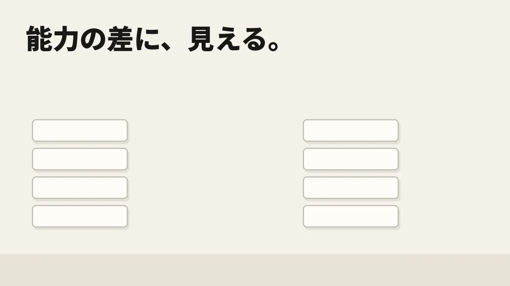

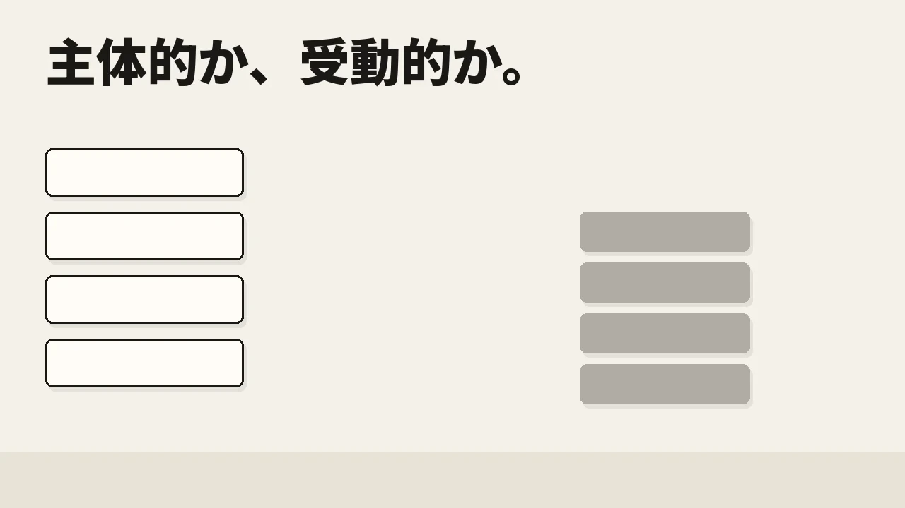
能力の差に、見える。
主体的か、受動的か。
同じように教わっていても、伸びる人と止まる人がいます。能力の差に見えるかもしれません。実際は主体的に動くか、受動的に待つかの差です。
はじめは左上の一行と、左右に同じ四枚の札です。おわりは左上の大きな一行、左の列は大きく前へ、右の列は小さく灰のままです。札に文字は載せません。01は横に二列、08の結びは縦に積みます。
- 声は約0.5秒置いて入る。「能力の差に、見える。」は行のマスクから左へ入り、声の「能力の差に見えるかもしれません」に着地する。
- 声の「実際は」から、左の列だけが前へ出て大きくなる。右の列は高さを変えず、灰になる。声の「差です」に「主体的か、受動的か。」を着地させる。
- 読むあいだ、机の層は左の列に合わせてゆっくり流れ、左の札は流れより少し速い。右の列はほぼ置いたまま、灰の面だけが残る。字形は崩さない。
- 左へ出た流れを、02の「教えてもらう、」の入口にする。ここで止めない。
机の層を、前へ出た列に合わせて少し左へ振る（パン）。文字は正面のまま読む。
図形と文字。人の姿は描きません。二列は能力の差に見えて、動きで分かれる側です。
学ぶ、に寄せる。
0:14.0–0:36.4 / 22.4秒 ・ 主張と留保 ・ 声112字／画面51字

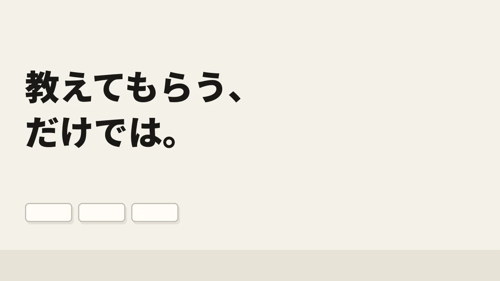

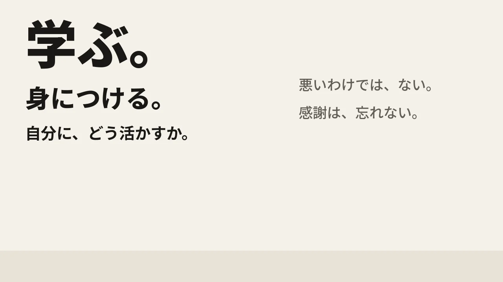
教えてもらう、だけでは。
悪いわけでは、ない。
感謝は、忘れない。
自分に、どう活かすか。
学ぶ。
身につける。
教えてもらうだけではそこまで身につきません。教えてもらうこと自体が悪いわけではありません。教えてくれる人がいるから、できています。その感謝を忘れる話ではありません。自分にどう活かすかです。学ぶ、身につける、に寄せた方がいい。
はじめは左に二段の大きな受動の句と、下に三枚の小さな札です。おわりは左に「学ぶ。」が特大、「身につける。」がその下、「自分に、どう活かすか。」はさらに小さい。右に灰の二行です。寄せた方がいい、という勧めの強さは声に残し、画面の「学ぶ。」を命令の行にはしません。
- 「教えてもらう、だけでは。」が行のマスクから入り、声の「身につきません」に着地する。下の三枚はまだ文になっていない部品です。
- 声の「悪いわけではありません」で、句は小さく上へ退き、「悪いわけでは、ない。」が灰で残る。声の「感謝を忘れる話ではありません」で「感謝は、忘れない。」が灰で着地する。
- 声の「自分にどう活かすかです」で、その行が左に着地する。声の「学ぶ」「身につける」で、二つの塊が逆方向から入る。「学ぶ。」の方が大きい。
- 読むあいだ、「学ぶ。」と「身につける。」は逆向きにゆっくり流す。灰の二行は流さず、留保として残す。
- 下に残した三枚を、03の主語、目的語、述語の札にする。
退く句から、着地した「学ぶ。」へ寄る。掛けるのは図の層です。文字は正面のまま。
図形と文字。コミュニティへ共有する場面は入れません。
私が、学ぶ。
0:36.4–0:47.0 / 10.6秒 ・ 見せ場 ・ 声47字／画面31字

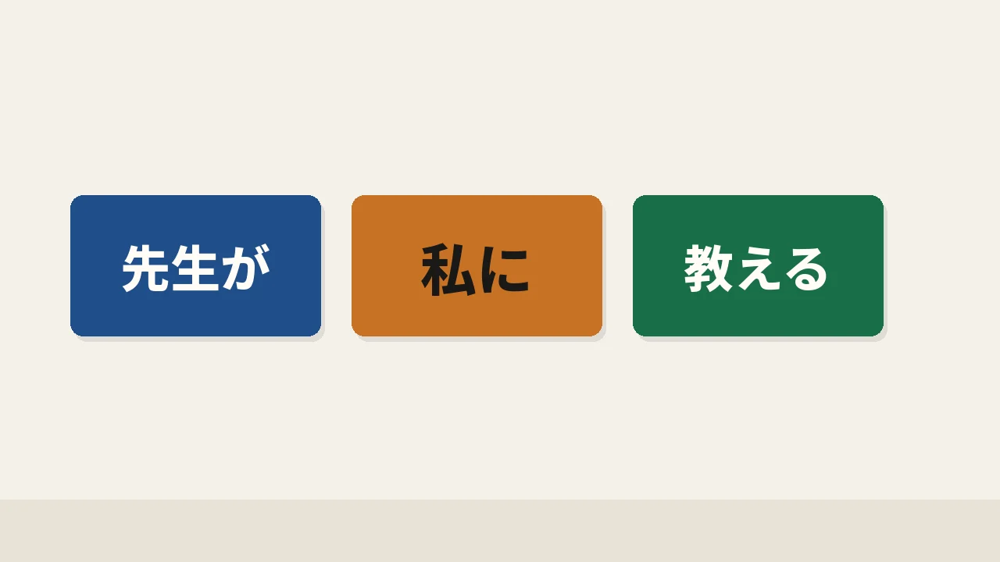

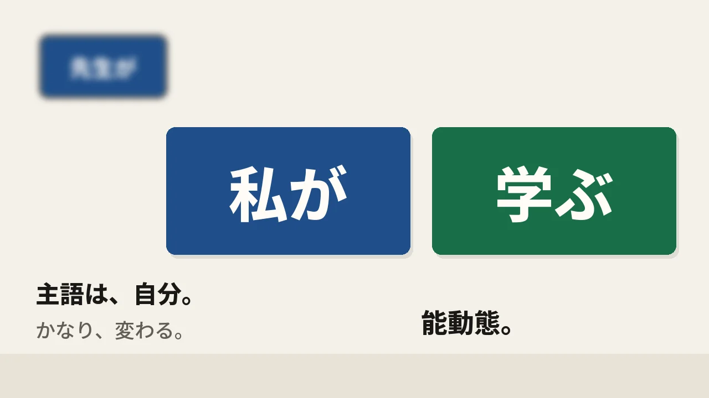
先生が
私に
教える
私が
学ぶ
能動態。
主語は、自分。
かなり、変わる。
自分を主体にします。受動態ではなく能動態です。主語を「学ぶ」にした方がいい。かなり変わります。
はじめは画面の中央に三枚が横一列です。青が主語、橙が目的語、緑が述語です。おわりは「私」が青の主語として前に大きく、「学ぶ」が緑でその右に同じ大きさです。「先生が」は左上で小さく、ぼけています。「主語は、自分。」と灰の「かなり、変わる。」は下、「能動態。」は下の右です。札の面の語は、その札の中に収めます。
- 三枚は02の下の札から、色を分けて中央へ揃う。面は「先生が」「私に」「教える」のまま。
- 揃ったあと2秒、図の層だけを「私」の札へ寄せる（ドリーイン）。ゆっくり。「私」の文字は正面のまま読む。この2秒はこの見せ場の時間として守る。
- 声の「自分を主体にします」で、「私」が文頭へ滑り、札の色が橙から青へ替わる。声の「能動態です」で、緑の面が「教える」から「学ぶ」へまとめて替わる。1字ずつ記号には崩さない。
- 替わった瞬間の0.5秒、「先生」の札とその文字だけをぼかす（ラックフォーカス）。「私」と「学ぶ」はぼかさない。この0.5秒も守る。
- 声の「かなり変わります」で、灰の「かなり、変わる。」が着地する。程度を消して、全部変わる、にはしない。
- 着地のあと前の二枚は止めず、04の情報の札へ流す。
ドリーイン2秒の直後に、ラックフォーカス0.5秒。寄るのは図の層です。ぼかしは「先生」の札と、その札の文字に限る。
図形と文字。黒板にチョークの粉を散らす映像は使いません。扱いは差し替え候補。
自分で、判断する。
0:47.0–0:58.4 / 11.4秒 ・ 主張と留保 ・ 声52字／画面35字

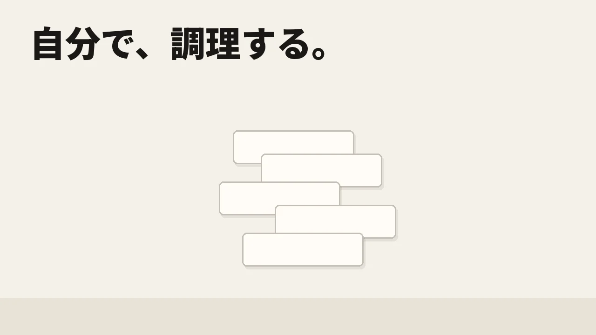

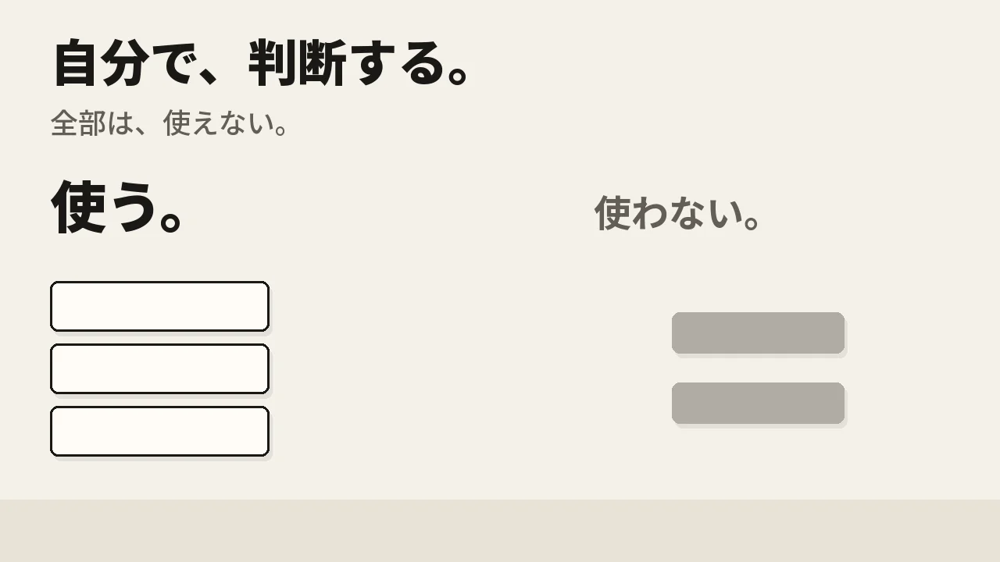
自分で、調理する。
全部は、使えない。
使う。
使わない。
自分で、判断する。
触れた情報は自分で調理します。全部が使えるわけではありません。使うのか、使わないのかを自分で判断します。
はじめは左上の一行と、中央に重なった札の山です。おわりは左上に「自分で、判断する。」、その下に灰の「全部は、使えない。」、左下に大きな「使う。」と三枚、右に小さい「使わない。」と二枚の灰の札です。調理は厨房の絵にはしません。札を分けて並べ替えることが、自分で調理することです。
- 山が右から流れ込み、声の「自分で調理します」に「自分で、調理する。」が着地する。
- 声の「全部が使えるわけではありません」で、灰の「全部は、使えない。」が着地し、山が二つに割れ始める。
- 声の「自分で判断します」で、手前の札が「使う。」へ寄り、奥の札が「使わない。」へ退く。手前ほど速い。
- 読むあいだ、二つの流れは止めない。奥の札を05の短い基礎の塊の外側へ渡す。
手前の「使う。」へ図の層を寄せ、奥は遅く流す。文字の層には掛けません。
図形と文字。食材や調理器具は描きません。原稿の「調理」は情報を自分で分けることの言い方として、言葉の側に置きます。
基礎まで。
0:58.4–1:24.6 / 26.2秒 ・ 根拠と留保 ・ 声133字／画面65字

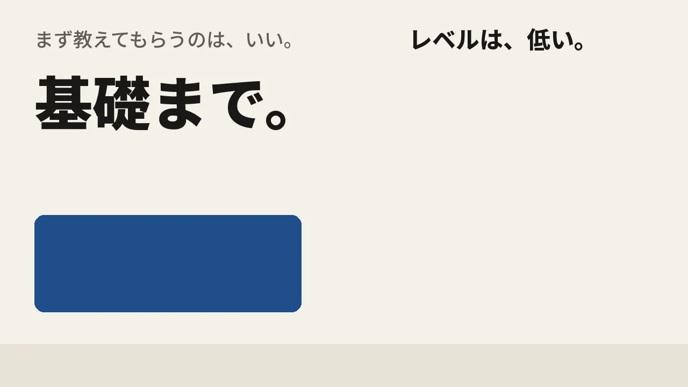

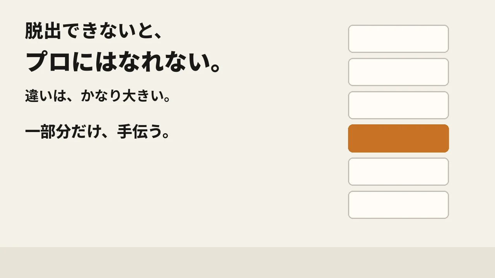
まず教えてもらうのは、いい。
レベルは、低い。
基礎まで。
脱出できないと、プロにはなれない。
一部分だけ、手伝う。
違いは、かなり大きい。
教えてもらうことが悪いとは言いません。初心者がまず教えてもらうのはいいです。教えてもらえるレベルは低いです。基礎にしかなりません。脱出できない限り、何かの道のプロにはなれません。詰まったところを聞くのは一部分だけを手伝ってもらうことです。この違いはかなり大きいです。
はじめは左上に灰の「まず教えてもらうのは、いい。」、右上に「レベルは、低い。」、左に特大の「基礎まで。」、その下に短い青の塊です。おわりは左に四段、右に六節の列です。橙は一節だけです。「脱出できないと、」は条件の行で、「プロにはなれない。」より小さくします。声は「何かの道のプロ」まで言い、画面の行は条件を残した短縮です。プロになれない、を条件なしの断定にはしません。
- 短い青の塊が置かれ、声の「基礎にしかなりません」に「基礎まで。」が着地する。声の「レベルは低いです」で「レベルは、低い。」が着地する。
- 声の「まず教えてもらうのはいいです」のあいだ、灰の行は塊の上に残す。基礎の短さを、初心者を否定する絵にはしません。
- 声の「プロにはなれません」で、列が下から上へ一節ずつ伸びる。「脱出できないと、」を先に着地させ、そのあと「プロにはなれない。」を大きくする。
- 声の「一部分だけ」で、伸びた列の一節だけが橙になる。ほかの節には色を足さない。
- 声の「かなり大きいです」で「違いは、かなり大きい。」が着地する。列は読むあいだも、わずかに上へ流れ続ける。
- 橙の一節を06で画面の外へ出ていく札の先頭にする。
短い塊から、伸びる列の上へ昇って、橙の一節まで戻る（クレーンアップのあと、少し戻す）。文字は正面のまま。
図形と文字。学校の名、教室の写真、指導の場面は入れません。
誰も、教えてくれない。
1:24.6–1:45.1 / 20.5秒 ・ 主張と留保 ・ 声102字／画面46字

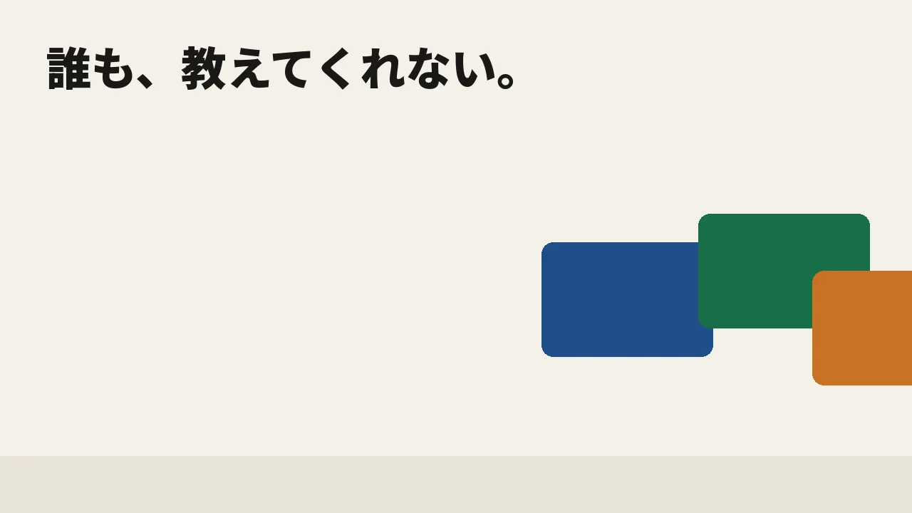

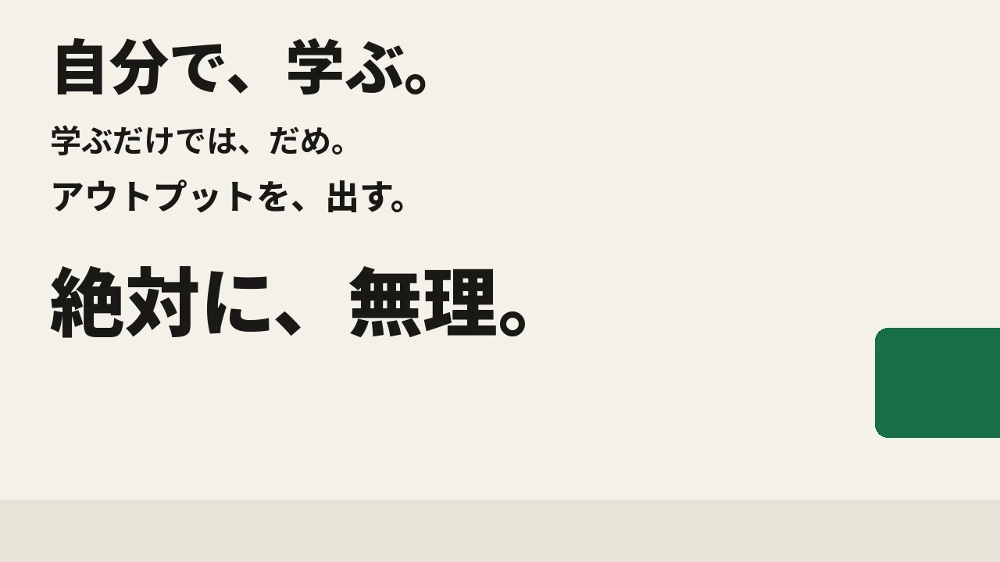
誰も、教えてくれない。
自分で、学ぶ。
学ぶだけでは、だめ。
アウトプットを、出す。
絶対に、無理。
お金をもらう立場になったら、誰も教えてくれません。自分で学びます。学ぶだけでもだめです。アウトプットを出していかなければいけません。教えられていないからできません、では、お金は取れません。絶対に無理です。
はじめは左上の一行と、右へ重なりながら出ていく三枚です。札に新しい語は書きません。おわりは左に四段です。「絶対に、無理。」がいちばん大きい。「学ぶだけでは、だめ。」はその上で小さく、学ぶだけで足りる、にはしません。お金の札や通貨の印は置きません。原稿の反語は声の「お金は取れません。絶対に無理です。」で受けます。
- 声の「誰も教えてくれません」で、色の札が右の外へ滑り、「誰も、教えてくれない。」が着地する。
- 声の「自分で学びます」で、空いた中央に「自分で、学ぶ。」が大きく入る。
- 声の「学ぶだけでもだめです」で「学ぶだけでは、だめ。」が着地し、その前から「アウトプットを、出す。」が手前へ出る。義務の強さは声の「なければいけません」に残す。
- 声の「絶対に無理です」で「絶対に、無理。」が大きく着地する。右端の一枚はまだ外へ出ている途中のまま残し、教えてくれる側が完全に消えて安心、にはしません。
- 手前へ出た一行を、07の開いた輪の回転へ渡す。
出ていく札を右へ追い、残った「絶対に、無理。」へ戻す。文字は正面のまま。
図形と文字。金額、社名、通貨の記号は出しません。
飯が、食える。
1:45.1–1:59.8 / 14.7秒 ・ 根拠と結論 ・ 声70字／画面32字

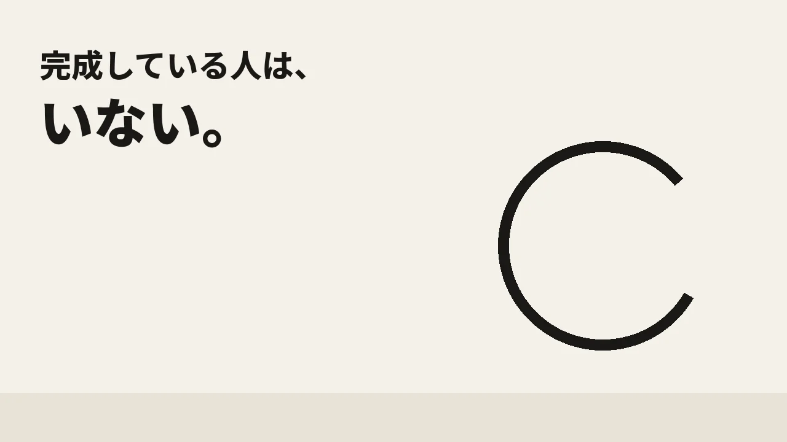

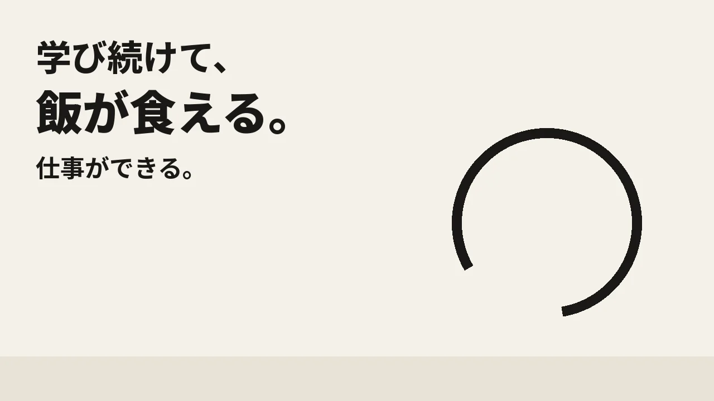
完成している人は、いない。
学び続けて、飯が食える。
仕事ができる。
今プロの人だって、永遠に学び続けています。完成している人などはいません。完成していなくても、学び続けている人は飯が食えます。仕事ができます。
はじめは左に二段、「いない。」の方が大きい。右に開いた輪です。おわりは左に三段、「飯が食える。」がいちばん大きい。「仕事ができる。」はその下です。輪は閉じません。食器や食事の絵にはしません。飯が食える、は仕事で暮らせる、という原稿の言い方のまま置きます。
- 輪は最初から開いていて、カットのあいだ回転し続ける。閉じる絵にはしない。
- 声の「完成している人などはいません」で「いない。」が大きく着地する。
- 声の「飯が食えます」で「飯が食える。」が着地し、声の「仕事ができます」でその下の行が着地する。二つの行を、どちらか一方へまとめません。
- 読むあいだも輪は回す。字形は崩さない。
- 回る輪を、08で小さく残した「私が 学ぶ」の前へ渡す。
開いた輪の周囲を、図の層だけ少し回り込む（オービット）。文字は正面のまま。
図形と文字。人の完成度を顔や体の絵で示しません。
景色は、変わる。
1:59.8–2:19.7 / 19.9秒 ・ 本人の結論 ・ 声82字／画面47字

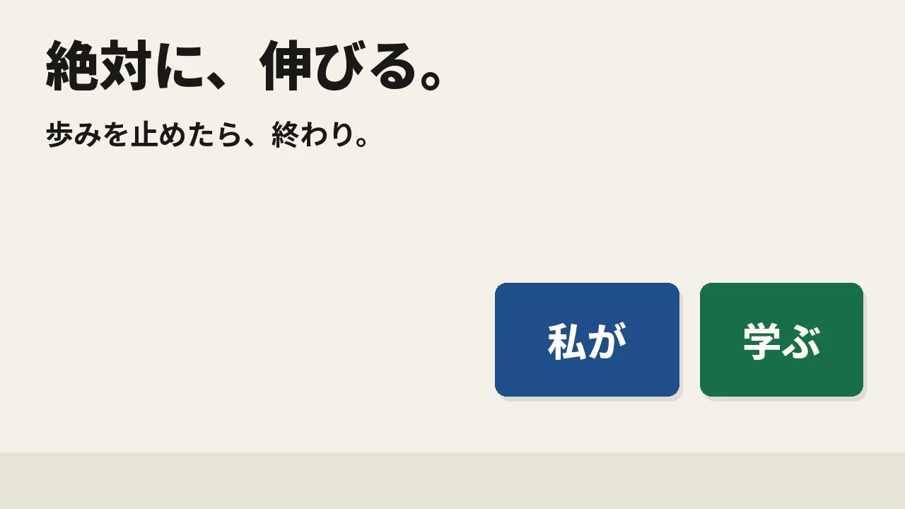

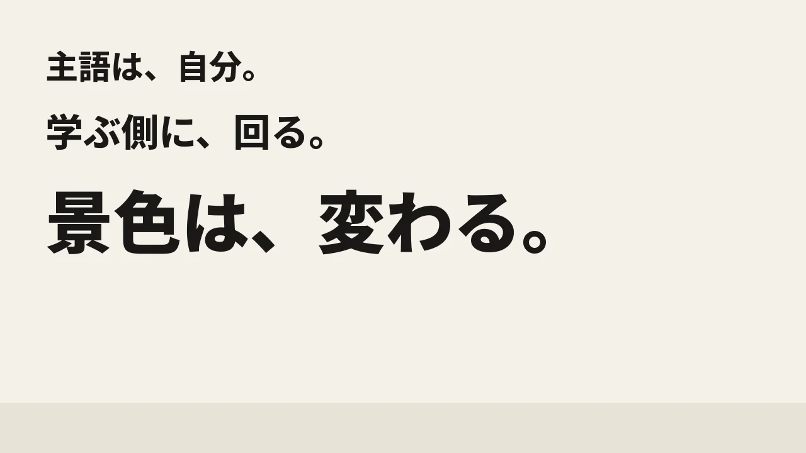
絶対に、伸びる。
歩みを止めたら、終わり。
主語は、自分。
学ぶ側に、回る。
景色は、変わる。
私が
学ぶ
主語を自分にすると、絶対に伸びます。自分が歩みを止めたら、終わりだからです。学ぶ側に回ったかどうか。そこに尽きます。教えてもらうを卒業した人から、景色は変わります。
はじめは左に「絶対に、伸びる。」が大きく、その下に「歩みを止めたら、終わり。」、右下に03の結果である「私が」「学ぶ」の二枚です。先生の札はありません。おわりは左に縦の三段です。「景色は、変わる。」がいちばん大きい。01の横の二列とは組を変えます。「そこに尽きます」は声に残し、画面へは足しません。
- 声の「絶対に伸びます」で「絶対に、伸びる。」が着地する。声の「終わりだからです」で「歩みを止めたら、終わり。」がその下に着地する。理由の行を「伸びる」の行より大きくしません。
- 二枚の札が左の縦組みへ吸い込まれ、「主語は、自分。」「学ぶ側に、回る。」が上から入る。
- 声の「景色は変わります」に、いちばん大きい「景色は、変わる。」を着地させる。
- 結びの約3秒も縦の塊をゆっくり寄せる。字形は崩さない。
- 最後に図の層を右へホイップパンし、ライムの全面へ渡す。ロゴの動きは、この振りが終わってから始める。
結びのあいだは文字の塊へ寄せてから、図の層だけをホイップパンする。ロゴの区間は固定です。振るあいだの短いぼかしに、白い加算は入れません。
図形と文字。視聴者への問いには閉じません。
エンドロゴ
2:19.7–2:25.2 / 5.5秒 ・ 制作表示 ・ 声0字／画面0字

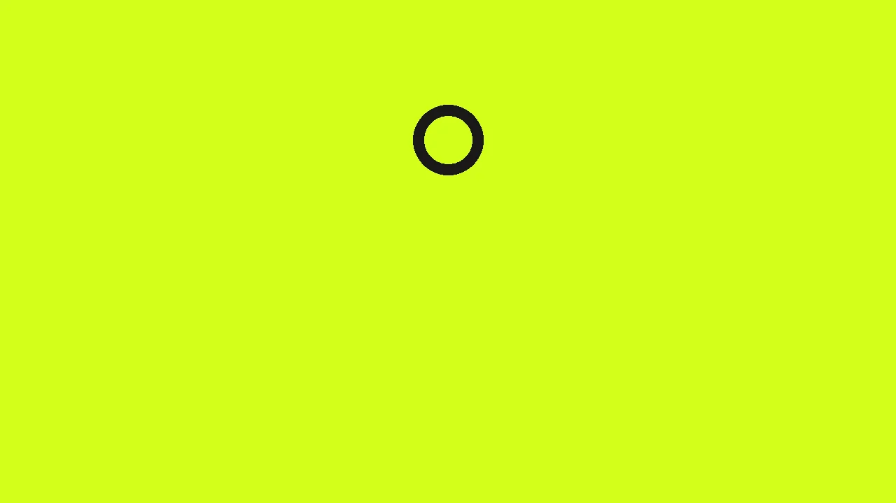

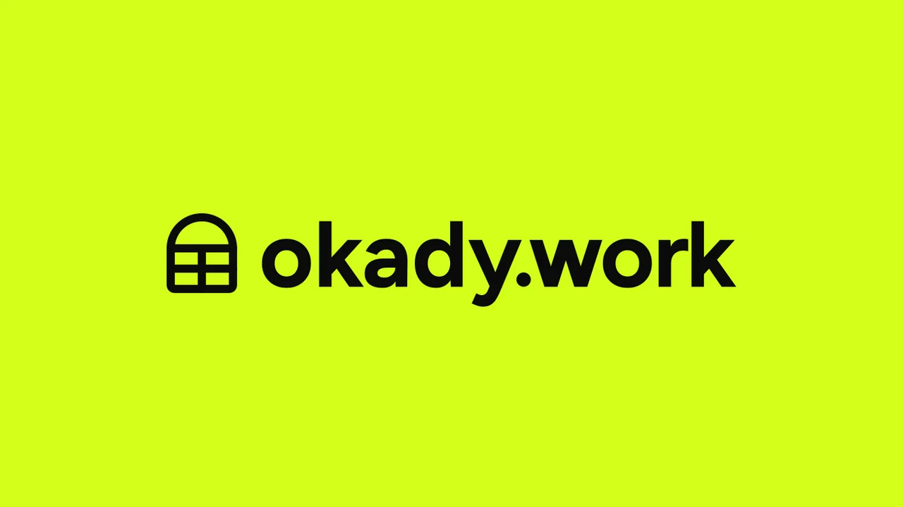
なし（ロゴのみ）
なし
背景は #d2ff1a。ロゴは中央。形、書体、色、比率は変えない。本編の要素は重ねません。
- 0–2.6秒：原本 SVG の o の落下、バウンド、定位置への移動。
- 2.6–3.2秒：全体が左へスライド。3.0–4.0秒：「.work」が一文字ずつ出現。
- 4.0–5.5秒：完成状態を1.5秒保持して終える。
ロゴの区間は固定。本編からの振りは、この動きが始まる前に終えます。
リポジトリ直下の okady-work-logo.svg。フレーム時刻から再現します。

詳細（ここから下は補足）
声・文字・素材の分担
| 担当 | 受け持つこと | 扱い |
|---|---|---|
| 声 | 能力の差に見えること、主体と受動の差、身につかないこと、悪くないこと、感謝、自分にどう活かすか、寄せた方がいいこと、能動態、かなり変わること、調理と判断、全部は使えないこと、初心者はまず教えてもらうのはいいこと、レベルが低いこと、基礎、何かの道のプロ、一部分だけの手伝い、誰も教えてくれないこと、学ぶだけではだめなこと、アウトプット、絶対に無理、完成していないこと、飯が食えること、絶対に伸びること、景色は変わること | 画面の短い語と意味を合わせる。画面の全文の朗読にはしない。カット単位のまとまった文で渡す。 |
| 文字 | 主体的か受動的か、学ぶ、身につける、私が学ぶ、自分で判断する、基礎まで、一部分だけ手伝う、誰も教えてくれない、絶対に無理、飯が食える、景色は変わる | 説明の全文は載せない。01は横の二列、08は縦の三段で組を変える。 |
| 図形 | 二列の札、三色の文の札、使うと使わないの山、短い基礎の塊、高い列、出ていく札、開いた輪 | 一つの形に複数の意味を持たせない。対応は記号と色。 |
| 動画 | なし | 写真も、生成映像も、この企画の本線には使わない |
ナレーションありの構成です。音声の制作は制作側の担当で、音源がまだ無いことは引き渡しを止める理由にしません。読みは「主体的＝しゅたいてき」「受動的＝じゅどうてき」「受動態＝じゅどうたい」「能動態＝のうどうたい」「アウトプット＝アウトプット」です。
主張・根拠・留保の対応
| 役割 | 内容 | カット |
|---|---|---|
| 主張 | 伸びる人と止まる人の差は、能力ではなく、主体的に動くか、受動的に待つか。 | 01 |
| 留保 | 教えてもらうだけではそこまで身につかない。教えてもらうこと自体が悪いわけではない。教えてくれる人がいるからできている。その感謝を忘れる話ではない。 | 02 |
| 主張 | 考え方は自分にどう活かすか。言葉は学ぶ、身につける、に寄せた方がいい。 | 02 |
| 主張 | 自分を主体にする。受動態ではなく能動態。主語を学ぶにした方がいい。かなり変わる。 | 03 |
| 主張 | 触れた情報は自分で調理し、使うか使わないかを自分で判断する。 | 04 |
| 留保 | 全部が使えるわけではない。 | 04 |
| 留保 | 教えてもらうことが悪いとは言わない。初心者がまず教えてもらうのはいい。 | 05 |
| 根拠 | 教えてもらえるレベルは低い。基礎にしかならない。脱出できない限り、何かの道のプロにはなれない。 | 05 |
| 主張 | 詰まったところを聞くのは、一部分だけを手伝ってもらうこと。この違いはかなり大きい。 | 05 |
| 主張 | お金をもらう立場になったら、誰も教えてくれない。自分で学ぶ。教えられていないから、ではお金は取れない。絶対に無理。 | 06 |
| 留保 | 学ぶだけでもだめ。アウトプットを出していかなければいけない。 | 06 |
| 根拠 | 今プロの人だって永遠に学び続けている。完成している人はいない。 | 07 |
| 結論 | 完成していなくても、学び続けている人は飯が食える。仕事ができる。主語を自分にすると絶対に伸び、歩みを止めたら終わり。学ぶ側に回った人から、景色は変わる。 | 07、08 |
原稿の文との対応、画面の文言と要約の区別、この動画に載せなかった論点は references.md。
企画側／制作側
| 企画側で用意するもの | 制作側で仕上げるもの |
|---|---|
| 現行の文言、声の原稿、配分、絵コンテ18枚、原稿との対応、演出の採否、曲の条件 | three.js と文字層の実装、細かな動きと同期、ナレーション、BGMと効果音、代表区間の試作と全編の書き出し |
| 静止コマの文字配置の点検 | 動いている全カットの安全域と重なりの検査、実速再生 |
企画と絵コンテはこの一式です。ナレーション、BGM、効果音、本編は制作側が担当します。企画側は音源を作りません。これ以外の画像や動画が必要になったら、必要な内容を企画側へ返します。制作側は動画AIで新規の素材を作りません。
requestAnimationFrame のループを本編の動きにしません。ナレーションの候補は Gemini 3.8 Flash TTS、または Eleven v4。名称はユーザー指定の候補で、実行時に識別子を確認します。キーは環境変数から読み、値は書きません。デザインシステム（映像の文字・色・グリッド）
紙色 #F4F1EA、墨 #1A1916、灰 #625D56、主語の青 #1F4E89、目的語の橙 #C87224、述語の緑 #186E48。ライム #d2ff1a はロゴだけに使います。文字は Noto Sans JP、見出し700–900、補足400–500。制作側が OFL に沿って用意します。このフォルダには同梱しません。企画書の配色とは別です。
| 段 | 1920×1080の参考値 | 用途 |
|---|---|---|
| 大きな語 | 140–200px | 02の「学ぶ。」、03の「私が」「学ぶ」、05の「基礎まで。」、06の「絶対に、無理。」、08の「景色は、変わる。」 |
| 主文 | 80–120px | 01の「主体的か、受動的か。」、04の「自分で、判断する。」、07の「飯が食える。」 |
| 短い語 | 40–64px | 灰の留保、札の面の語、05の条件の行 |
外側余白は96pxを目安にします。文字の安全域は左右64px、上下48px。1280×720の絵コンテでは左右48px、上下36pxです。01は左右の二列、02は左の動詞と右の灰、03は中央の三枚から前の二枚、04は山から手前と奥、05は短い塊から高い列、06は出ていく札から左の四段、07は左の文字と右の輪、08は横の二枚から縦の三段です。
動きの言語
| 動作 | 意味と使う場所 | 読む間・次へのつながり |
|---|---|---|
| 揃った二列の、片方だけが前へ出る | 01。能力の差に見えて、動く側と待つ側が分かれる。 | 机を流し、左の列を02の部品の札へ渡す。 |
| 受動の句が退き、二つの動詞が逆から入る | 02。言葉を学ぶ、身につける、へ寄せる。灰は留保。 | 下の三枚を03の文の札にする。 |
| 寄ってから、主語が滑り、述語の面が替わる | 03。2秒のドリーインのあと、「私」が文頭へ滑り、「教える」が「学ぶ」になる。0.5秒のラックフォーカスで「先生」だけをぼかす。 | 着地のあとも前の二枚を流し、04の山へ渡す。 |
| 山が手前と奥に割れる | 04。自分で調理し、使うか使わないかを判断する。全部は使えない。 | 奥の流れを05の短い塊の外へ渡す。 |
| 短い塊の横で、列が一節だけ色を変える | 05。基礎まで。手伝いが付くのは一節だけ。 | 橙の一節を06の、出ていく札にする。 |
| 色の札が画面の外へ出る | 06。お金をもらう側では誰も教えてくれない。絶対に無理。 | 手前の一行を07の輪の回転へ渡す。 |
| 開いた輪が回り続ける | 07。完成していない。それでも学び続ければ飯が食える。 | 輪は閉じずに、08の「私が 学ぶ」へ渡す。 |
| 縦の結びが着地し、右へ振る | 08。絶対に伸びる。歩みを止めたら終わり。景色は変わる。 | 結びの約3秒も塊を寄せ、ホイップパンでロゴへ渡す。 |
1字ずつの常時の揺れ、拍ごとの脈動、文字の崩壊は使いません。文字を読ませるために画面全体を静止させず、文量、動かす層、構図で調整します。イージングの値は制作側の裁量です。03の2秒と0.5秒、ロゴの秒、決め語を声のどの語に合わせるかは、各カットに書いてあります。声の語と画面の変化を並べ、3秒以上変化のない区間を残しません。
記号と色
| 記号 | 意味 |
|---|---|
| 墨の大きな語 | 本人の決め語。01の「主体的か、受動的か。」、02の「学ぶ。」、03の「私が」「学ぶ」、06の「絶対に、無理。」、08の「景色は、変わる。」 |
| 灰の語 | 留保と程度。02の「悪いわけでは、ない。」「感謝は、忘れない。」、03の「かなり、変わる。」、04の「全部は、使えない。」「使わない。」、05の「まず教えてもらうのは、いい。」 |
| 青の札 | 主語。はじめは「先生が」、組み替えのあと「私が」 |
| 橙の札 | 目的語の「私に」。05では、手伝いが付いた一節だけ |
| 緑の札 | 述語。はじめは「教える」、あとは「学ぶ」 |
| 短い青の塊 | 教えてもらえる基礎。レベルは低い。05のはじめだけ |
| 高い列 | 自分で学ぶ側の道のり。橙は一節だけ。05 |
| 開いた輪 | 完成していないこと。閉じない。07 |
キャラ設定
人物、顔、手は描きません。「先生」は札の語で、人の姿ではありません。吹き出しは出しません。会社名、学校名、作品の絵柄、人名、SNSの画面は出しません。
差し替え候補
白い教室の黒板に書かれた文字が、チョークの粉を散らしながら並び替わる映像は、AI生成・未承認・未生成です。今回は生成しません。人物は描きません。本線は、制作側が描く色の違う札です。主語、目的語、述語を入れ替えます。
札は03、06、08に続きます。その一部だけを黒板の映像や実写にはしません。黒板を後から使う場合は、札が出る区間の質感を揃え、クレジット消費の承認が要ります。この企画ではその承認をしていません。
素材
| ファイル | 役割 | 使用区間 |
|---|---|---|
assets/storyboard/cut-XX-start.webp と cut-XX-end.webp | 絵コンテ18枚。1280×720。09はライム。ほかは明るい紙色の図形と文字 | 本編に貼る完成素材ではない |
| okady-work-logo.svg | エンドロゴ | 09の全区間。リポジトリ直下の原本。一式を移すときもこの相対位置を保つ |
新たに取得する写真、動画、フォントファイルはありません。Noto Sans JP は制作側が用意します。このフォルダには同梱しません。
音
BGMと効果音は制作側が作ります。企画側は音源を作らず、条件だけを書きます。音源がまだ無いことは、引き渡しを止める理由にしません。
- トーン：机の上で主語が自分へ移る、乾いた前への足取り。重くしない。暗い教室の音にはしない。声の邪魔をしない音色にする。
- リズム：札が滑る、着地する、組み替わる動きを支える、拍のはっきりした刻み。ゆっくりした曲に合わせて映像を遅くしない。
- 展開：03の寄りで溜め、「学ぶ」に替わった瞬間に一段上げる。08は結びへ向けて開く。
- 尺と終わり方：エンドロゴの終わりまで覆い、ロゴの終了に合わせて収める。
- 効果音：札の滑り、決め語の着地、述語の面が替わる一撃。意味のない飾りの音は入れない。
根拠
原稿との対応は references.md。演出候補の確認と採否は effects-direction.md。採否の履歴を本編の作業手順には混ぜません。
完成条件・確認状態
- 01と08で、差は主体的か受動的かということと、教えてもらうを卒業した人から景色は変わるという本人の結論まで閉じる。08の「歩みを止めたら、終わり。」は、伸びる、の行より小さく残す。
- 02は教えてもらうだけでは身につかないこと、悪いわけではないこと、感謝、自分にどう活かすか、学ぶと身につけるに寄せた方がいいことを、声か画面に残す。
- 03は「先生が 私に 教える」の「私」が文頭へ滑り、「教える」が「学ぶ」になって「私が 学ぶ」になる。直前のドリーインは2秒、替わった瞬間のラックフォーカスは0.5秒。「先生」だけをぼかす。白い加算は入れない。
- 04は触れた情報を自分で調理し、使うか使わないかを自分で判断すること、全部が使えるわけではないことを残す。厨房の絵にはしない。
- 05は初心者がまず教えてもらうのはいいこと、レベルは低いこと、基礎までであること、脱出できない限り何かの道のプロにはなれないこと、詰まったところは一部分だけの手伝いで、その違いはかなり大きいことを残す。画面の「プロにはなれない。」から条件の行を外さない。
- 06はお金をもらう立場では誰も教えてくれないこと、学ぶだけではだめなこと、アウトプットを出していかなければいけないこと、教えられていないからではお金は取れず絶対に無理であることを残す。通貨の印は置かない。
- 07は完成している人はいないこと、学び続けていれば飯が食えて仕事ができることを残す。輪は閉じない。食器は描かない。
- 札は顔にしない。人物、企業名、学校名、作品の絵柄、SNSの画面は出さない。
- 章表示、テロップ帯、エンドクレジット、白フラッシュは入れない。エンドロゴはライムの単独画面で、原本の動き、中央、1.5秒の保持を再生して確認する。
- 絵コンテ18枚（1280×720）を、左右48px・上下36pxの安全域、文字同士、文字と図形（札、塊、列、輪）の交差で検査した。はみ出し0、文字同士の重なり0、文字と図形の交差0。札の面に置いた語はその札との交差を意図した重なりとして検査から外した（03はじめの三枚、03おわりの「私が」「学ぶ」とぼかした「先生が」、08はじめの「私が」「学ぶ」）。相対輝度（0.2126R＋0.7152G＋0.0722B、0〜255）の平均は18枚で226.0、最小は03おわりの200.6、最大は01はじめの235.9。紙色の地は #F4F1EA。ロゴの地 #d2ff1a の09おわりは221.2。03おわりが低いのは、前に出た青と緑の札が大きいためで、地は紙色のままである。ロゴの字形と、09はじめの輪はこの検査の文字対象外。終了ロゴは左右150px、上下約203pxから約517pxで、安全域の内側。この検査は静止コマの配置で、本編の合格ではない。
- 本編は未制作。実速再生は未確認。制作側は全カットを0.25秒ごとに取り、左右64px・上下48pxの安全域、文字同士、文字と図の交差を検査する。声の語の時刻と画面の変化を並べ、3秒以上変化のない区間を名指しする。最初の試作は03。そのあと01、08–09、最後に全編を確認する。